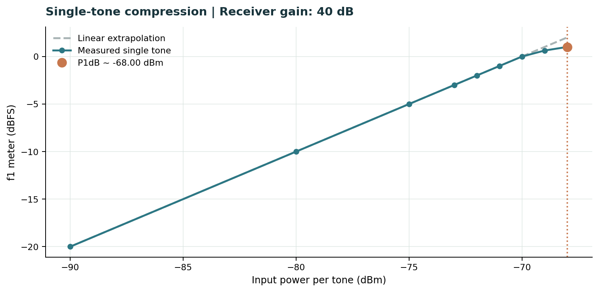
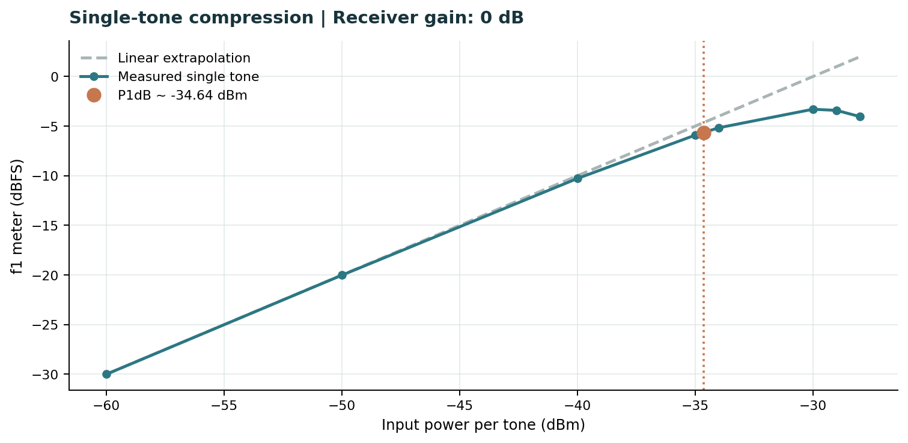
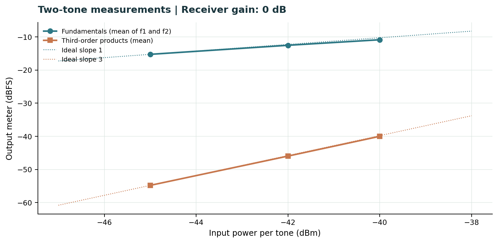
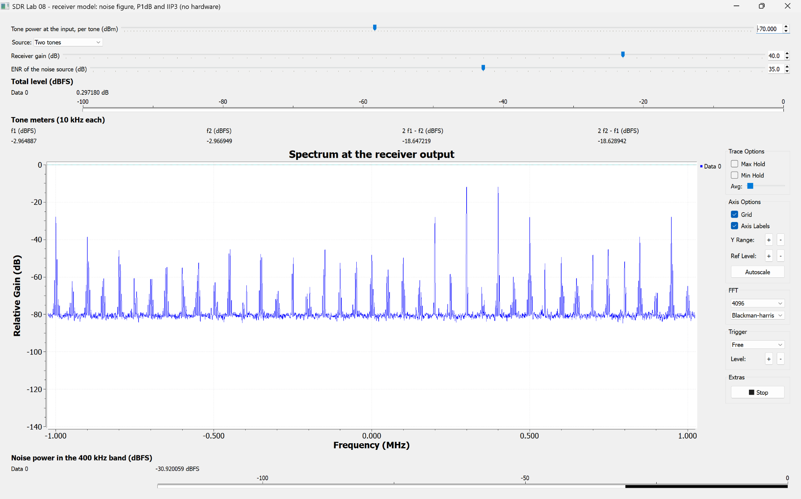
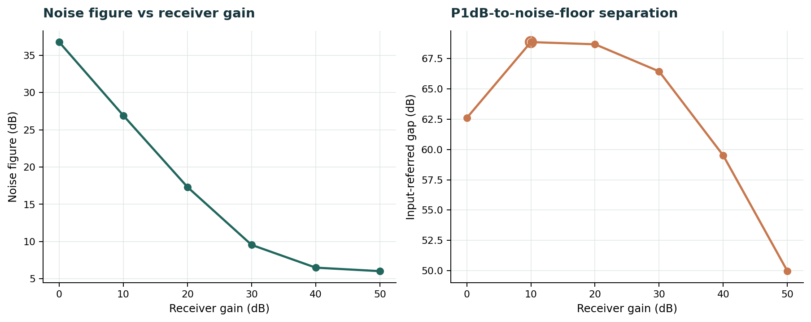
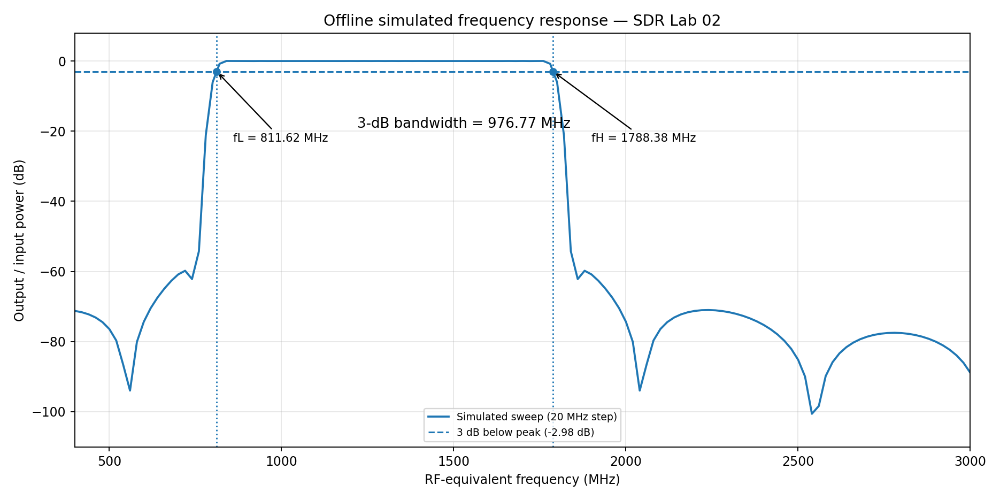

SDR LABORATORY • PRE-LAB 02
عدد نویز و پارامترهای RF
Noise Figure · Y-Factor · P1dB · IIP3 · SFDR
جدول ۱ · صفحه ۵ راهنما
مشخصات آنتن اعلامشده توسط فروشنده
طبق صفحه محصول ANTENNA GSM 3DB 10CM در جوان الکترونیک، حداقل و حداکثر فرکانس بهترتیب ۲٫۴ و ۲٫۵ گیگاهرتز ذکر شده است.
| بازه | حد پایین (MHz) | حد بالا (MHz) |
|---|---|---|
| 1 | 2400 | 2500 |
عبارت «۴ باند» در مشخصات دیده میشود، اما حدود چهار باند مستقل ارائه نشده است؛ بنابراین بازه دیگری حدس نزدهایم. باند محصول فروشگاهی با مدل فیلتر ۸۰۰–۱۸۰۰ MHz در تکلیف ۵ یکسان نیست.
مطالعه منابع · صفحه ۷ راهنما
تکلیف ۱ — خلاصه منابع
عدد نویز (NF). عدد نویز نشان میدهد نسبت سیگنال به نویز در عبور از گیرنده چقدر افت میکند. نویز داخلی طبقات باعث میشود SNR خروجی از ورودی کمتر شود. ضریب نویز برابر نسبت این دو SNR است و میتوان آن را با دمای نویز معادل ورودی بیان کرد:
روش Y-Factor. یک منبع نویز کالیبره در دو حالت روشن و خاموش به ورودی وصل میشود. نسبت دو توان خروجی برای محاسبه NF کافی است؛ چون در تقسیم، بهره گیرنده و پهنای باند یکسان حذف میشوند. بنابراین کالیبراسیون مطلق توان لازم نیست و اختلاف دو قرائت dBFS نیز جواب میدهد. شرط اصلی، ثابت بودن بهره و خطی ماندن گیرنده است.
نقطه تقاطع مرتبه سوم (IIP3). ورود دو تن با فرکانسهای نزدیک، در مدار غیرخطی محصولاتی در 2f₁−f₂ و 2f₂−f₁ ایجاد میکند. در ناحیه سیگنال کوچک، توان تن اصلی با شیب ۱ و توان IM3 با شیب ۳ رشد میکند. محل تقاطع امتداد این دو خط، IIP3 است؛ هرچه بزرگتر باشد، مقاومت گیرنده در برابر بینمدولاسیون بهتر است. این یک نقطه برونیابیشده است، نه الزاماً نقطه کار واقعی.
حل تحلیلی · صفحه ۷ راهنما
تکلیف ۲ — پرسشهای نظری
۲-۱. عدد نویز و رابطه فریس
با T₀ = 290 K، دمای نویز از Tₑ = 290(10NF/10−1) به دست میآید.
| NF (dB) | F | Tₑ (K) |
|---|---|---|
| 1 | 1.2589 | 75.09 |
| 3 | 1.9953 | 288.63 |
| 6 | 3.9811 | 864.51 |
| 10 | 10.000 | 2610 |
برای زنجیره LNA → Filter → Mixer، مقادیر خطی عبارتاند از: G₁=100, F₁=1.2589, G₂=0.5012, F₂=1.9953, F₃=31.6228.
اگر فیلتر در ابتدای زنجیره باشد، با جابهجایی ترتیب در فرمول فریس NF≈4.95 dB میشود؛ یعنی حدود 2.20 dB افزایش. تلفات پیش از LNA سهم نویز مراحل بعد را بیشتر میکند.
۲-۲. استخراج رابطه Y-Factor
توان نویز خروجی برابر Nₒᵤₜ=GkB(Tᵢₙ+Tₑ) است. با قراردادن دمای حالت روشن Tₕ و خاموش T₀:
اگر دمای خاموش با دمای مرجع متفاوت باشد، رابطه کلی به صورت زیر است:
برای تضعیفگر تطبیقیافته با تلفات خطی A در دمای T₀، داریم Tₒᵤₜ=Tᵢₙ/A + T₀(1−1/A). بنابراین اختلاف دمای حالت روشن و خاموش 1/A برابر میشود و:
۲-۳. حساسیت NF به خطای Y
| NF واقعی | Y (dB) | خطای NF با +0.1 dB در Y | خطای NF با −0.1 dB در Y |
|---|---|---|---|
| 6 dB | 9.515 | −0.112 dB | +0.113 dB |
| 25 dB | 0.414 | −0.991 dB | +1.252 dB |
همه مقادیر برای ENR=15 dB هستند. وقتی Y به ۱ نزدیک میشود، خطای کوچک توان، خطای بزرگی در NF میسازد؛ برای NF بزرگ باید ENR بزرگتر انتخاب کرد، به شرط آنکه گیرنده اشباع نشود.
۲-۴. غیرخطی بودن و رابطه IIP3 با P1dB
برای y=a₁x+a₃x³ و x=A[cos(ω₁t)+cos(ω₂t)]، ضریب هر یک از محصولات 2ω₁−ω₂ و 2ω₂−ω₁ برابر است با:
پس توان تن اصلی متناسب با A² و IM3 متناسب با A⁶ است؛ شیبها در dB بهترتیب ۱ و ۳ میشوند. اختلاف دو خط با توان ورودی هر تن، رابطه زیر را میدهد:
برای مدل مکعبی با a₁>0, a₃<0، در ورودی تکتن دامنه مؤلفه اصلی a₁A+(3/4)a₃A³ است. در P1dB نسبت دامنه به حالت خطی 10−1/20 و در IIP3 امتداد دامنهها برابر میشود:
محدودیتها: (۱) حضور مراتب بالاتر یا اثر حافظه؛ (۲) تراکم و clipping مبدل ADC که رفتار شیب ۳ را برهم میزند.
۲-۵. محاسبه SFDR
برای NF=8 dB و IIP3=−10 dBm:
| پهنای باند | کف نویز ورودی | SFDR |
|---|---|---|
| 10 kHz | −126.00 dBm | 77.33 dB |
| 200 kHz | −112.99 dBm | 68.66 dB |
با افزایش پهنای باند بهاندازه ۲۰ برابر، کف نویز حدود ۱۳٫۰۱ دسیبل بالا میرود و SFDR حدود ۸٫۶۷ دسیبل کم میشود.
۲-۶. اثر بهره در گیرنده SDR
اگر ADC هشتبیتی در بهره صفر با ورودی −30 dBm به مقیاس کامل برسد، افزایش ۱۰ دسیبل بهره پیش از ADC، نویز خود ADC را در ارجاع به ورودی حدود 10 dB پایینتر میبرد؛ در مقابل حد مقیاس کامل ورودی به −40 dBm منتقل میشود (اگر تراکم به ADC محدود باشد).
بعد از آنکه نویز ADC در مقایسه با نویز طبقه RF ناچیز شد، افزایش بهره NF را خیلی بهتر نمیکند، اما احتمال clipping همچنان بیشتر میشود.
جدول ۴ · صفحه ۸ راهنما
تکلیف ۳ — برنامه اندازهگیری
| کمیت | انتخاب طراحی | دلیل عددی |
|---|---|---|
| ENR برای NF≈7 و NF≈30 dB | بهترتیب 12 و 35 dB مؤثر | Y≈6.19 dB در هر دو حالت؛ تفکیک مناسب ON/OFF |
| تضعیفگر منبع نویز | برای NF≈7: منبع ۱۵ با ۳ dB، یا منبع ۳۵ با ۲۳ dB؛ برای NF≈30: منبع ۳۵ با ۰ dB | در T₀: ENR_eff=ENR_source−A؛ منبع ۱۵ بهتنهایی برای NF≈۳۰ کافی نیست |
| میانگینگیری در نوار ۴۰۰ کیلوهرتز | حداقل پیشنهادی τ=0.2 s برای هر حالت | σY,dB≈4.343√(2/Bτ)≈0.022 dB (برآورد آماری نویز سفید) |
| جاروب تکتن و حد ورودی | ابتدا گام ۵ یا ۱۰ dB، نزدیک تراکم گام ۱ dB؛ سقف سخت ورودی −10 dBm | نمونه بازه مدل: بهره ۴۰ از −90 تا −68 dBm؛ بهره صفر از −60 تا −34 dBm |
| فرکانسهای دو تن و IM3 | f₁=300 kHz, f₂=400 kHz؛ محصولات 200, 500 kHz | فاصله دو تن 100 kHz و دو محصول در دو طرف قرار میگیرند |
| توان هر تن برای مشاهده IM3 | برای مدل، P_in≈−45 dBm در بهره صفر | NF≈36.76, IIP3≈−25.3: N_10k≈−97.24 dBm; برای IM3≥−87.24 داریم P_in≥−45.95 dBm |
مقادیر این جدول یک برنامه پیش از اندازهگیری واقعی هستند. توانهای پیشنهادی مربوط به مدل آفلایناند؛ در اتصال سختافزار، تلفات کابل و توان کل دو تن هم باید لحاظ شود.
شبیهسازی آفلاین · صفحه ۸ راهنما
تکلیف ۴ — مدل گیرنده GNU Radio
همه اعداد این بخش از lab02_sim.grc و نمایشگرهای مدل گرفته شدهاند؛ اندازهگیری سختافزار واقعی نیستند. توان نویز از نمایشگر 400 kHz noise power و توان تنها از 10 kHz tone meters خوانده شده است.
۴-۱. اندازهگیری NF با Y-Factor
| بهره (dB) | ENR (dB) | OFF (dBFS) | ON (dBFS) | Y (dB) | NF (dB) |
|---|---|---|---|---|---|
| 40 | 15 | −41.863831 | −32.789337 | 9.0745 | 6.50 |
| 10 | 35 | −51.400230 | −42.685719 | 8.7145 | 26.91 |
در بهره ۴۰، ENR=15 dB اختلاف توان کافی ایجاد میکند؛ در بهره ۱۰، بهدلیل NF بزرگتر، مقدار 35 dB انتخاب شد تا Y قابل تشخیص بماند.
۴-۲. جاروب تکتن و P1dB


خطچین از بخش سیگنال کوچک امتداد داده شده است. نقطهای که خروجی ۱ dB پایینتر از آن قرار میگیرد، P1dB ورودی است. در بهره ۴۰، در Pin=−68 dBm افت حدود 1.0005 dB اندازهگیری شد؛ در بهره صفر، درونیابی بین −35 و −34 dBm مقدار −34.64 dBm را میدهد.
۴-۳. آزمایش دوتنی در بهره صفر و IIP3
| توان هر تن (dBm) | میانگین تنهای اصلی (dBFS) | میانگین IM3 (dBFS) | Δ (dB) | IIP3 (dBm) |
|---|---|---|---|---|
| -45 | -15.265 | -54.790 | 39.526 | -25.24 |
| -42 | -12.536 | -45.960 | 33.424 | -25.29 |
| -40 | -10.866 | -39.995 | 29.129 | -25.44 |

شیب IM3 در دو بازه بهترتیب 2.94 و 2.98 dB/dB است؛ نزدیک به ۳. برآورد IIP3 از نقاط کمتوانتر حدود −25.3 dBm است. از P1dB بهره صفر نیز −34.64+9.6=−25.04 dBm به دست میآید؛ اختلاف حدود 0.26 dB است.
۴-۴. آزمایش دوتنی در بهره ۴۰ و clipping
| توان هر تن (dBm) | میانگین تن اصلی (dBFS) | میانگین IM3 (dBFS) |
|---|---|---|
| -90 | -20.001 | -58.033 |
| -80 | -9.999 | -58.255 |
| -70 | -2.966 | -18.638 |

در −90 و −80 dBm مقدار نمایشگر IM3 نزدیک کف نویز است، پس از آن نمیتوان شیب معتبر حساب کرد. در −70 dBm مؤلفههای اضافی بهشدت ظاهر میشوند؛ چون خروجی دچار clipping شده، امتداد خطوط شیب ۱ و ۳ و استخراج IIP3 قابل اتکا نیست.
۴-۵. مقایسه شش بهره و انتخاب محدوده کار
| Gain (dB) | NF (dB) | P1dB (dBm) | کف نویز 10 kHz (dBm) | فاصله (dB) |
|---|---|---|---|---|
| 0 | 36.76 | -34.64 | -97.24 | 62.60 |
| 10 | 26.91 | -38.22 | -107.09 | 68.87 |
| 20 | 17.31 | -48.00 | -116.69 | 68.69 |
| 30 | 9.55 | -58.00 | -124.45 | 66.45 |
| 40 | 6.50 | -68.00 | -127.50 | 59.50 |
| 50 | 6.03 | -78.01 | -127.97 | 49.95 |

کف نویزِ ارجاعشده به ورودی از N10k=−174+NF+40=−134+NF dBm محاسبه شده است. در این مدل بیشترین فاصله به بهره ۱۰ dB میرسد (68.87 dB)؛ بهره ۲۰ هم بسیار نزدیک است (68.69 dB). این انتخاب برای مدل شبیهسازی است و لزوماً به گیرنده واقعی تعمیم داده نمیشود.
جدول ۵ · صفحات ۸ و ۹ راهنما
تکلیف ۵ — پاسخ فرکانسی شبیهسازیشده
برنامه lab02_antenna_response_simulation.py با جاروب 400–3000 MHz، گام 20 MHz و ۱۳۱ نقطه اجرا شد. این یک مدل فیلتر با باند اسمی ۸۰۰ تا ۱۸۰۰ مگاهرتز است، نه اندازهگیری آنتن فروشگاهی.

| کمیت | نتیجه استخراج از CSV |
|---|---|
| بیشینه پاسخ | +0.0201 dB (1760 MHz) |
| آستانه سه دسیبل | −2.9799 dB |
| فرکانس قطع پایین fL | 811.62 MHz |
| فرکانس قطع بالا fH | 1788.38 MHz |
| پهنای باند BW | 976.77 MHz |
برای یافتن دو فرکانس قطع، بین نقاط اطراف آستانه با درونیابی خطی محاسبه شد: سمت پایین، 800–820 MHz و سمت بالا، 1780–1800 MHz. دقت نمایش عددی بیشتر از تفکیک ۲۰ مگاهرتزی جاروب است؛ بنابراین اعداد را باید تقریبی دانست.
جدول ۶ · صفحه ۱۰ راهنما
تکلیف ۶ — پیشبینی آزمایش واقعی
ستون زیر، پیشبینی پیش از جلسه برای SDR واقعی است. دادههای مدل آفلاین فقط برای برآورد بهکار رفتهاند و جای «اندازهگیری آزمایشگاه» را نمیگیرند.
| ردیف | کمیت | پیشبینی | اندازهگیری واقعی |
|---|---|---|---|
| ۱ | NF در بیشترین بهره | حدود 6–7 dB (تخمین از مدل) | — |
| ۲ | تغییر NF با 20 dB کاهش بهره | افزایش؛ در مدل از بهره ۵۰ به ۳۰ حدود +3.52 dB | — |
| ۳ | تغییر P1dB با 10 dB کاهش بهره | حدود +10 dB اگر ADC محدودکننده باشد | — |
| ۴ | Y با ENR=15 و NF=7 dB | 8.64 dB | — |
| ۵ | افزایش NF با تضعیفگر 10 dB در T₀ | +10 dB | — |
| ۶ | IM3 با 2 dB افزایش توان هر تن | حدود +6 dB در ناحیه شیب سه | — |
| ۷ | آیا IIP3−P1dB نزدیک 9.6 dB است؟ | در مدل مکعبی بله؛ clipping واقعی میتواند آن را تغییر دهد | — |
| ۸ | NF و P1dB در بهره اختصاصی تیم | پس از اعلام بهره تیم تکمیل میشود | — |
ردیف ۸ نیازمند مقدار بهرهای است که مدرس برای تیم تعیین میکند. ستون آخر پس از اجرای آزمایش با گیرنده واقعی تکمیل میشود.
ایمنی و کیفیت اندازهگیری · صفحه ۱۰ راهنما
تکلیف ۷ — سه خطای محتمل
| خطا | پیامد | اقدام پیشگیرانه |
|---|---|---|
| توان بیش از حد در ورودی RF | احتمال آسیب به مدار جلویی | محاسبه توان کل ورودی؛ سقف −10 dBm؛ شروع از کمترین توان؛ تضعیفگر 30 dB هنگام استفاده از فرستنده SDR |
| تغییر اتصال در زمان فعال بودن خروجی منبع | آسیب ناشی از گذرا یا تخلیه الکترواستاتیکی | خاموشکردن خروجی پیش از جابهجایی کابل؛ رعایت احتیاط و ESD هنگام بستن SMA |
| تغییر بهره/AGC یا تراکم در اندازهگیری Y | بایاس در محاسبه NF | ثابت نگه داشتن بهره در ON/OFF، غیرفعال کردن AGC، انتخاب ENR مناسب و میانگینگیری |
منابع
مراجع و فایلهای مبنا
- D. M. Pozar, Microwave Engineering, 4th ed., Wiley, 2012 — فصل نویز و اعوجاج غیرخطی.
- Keysight Technologies, Noise Figure Measurement Accuracy: The Y-Factor Method.
- راهنمای پیشگزارش آزمایش ۲، صفحات ۵ و ۷ تا ۱۰؛ و فایلهای آموزشی lab02_sim.grc و lab02_antenna_response_simulation.py.
- خروجیهای آفلاینِ ثبتشده در تاریخ ۷ نوامبر ۲۰۲۶، شامل CSVهای گیرنده و Antenna_Sweep.csv.
فرم lab02_meas.grc برای اندازهگیری سختافزاری در چکلیست آمادگی راهنما آمده و جزو خروجیهای تولیدشده در این پیشگزارش نیست.